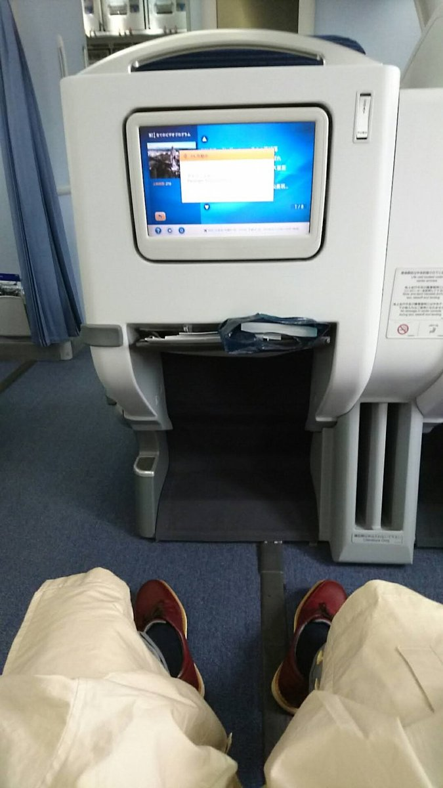

海外旅行や長距離の国内線で、何時間も座りっぱなし。降りたときに首が痛い、足がむくんでいる、眠れなかった……。そんな長時間の飛行機を少しでも楽にする持ち物をまとめました。

紹介する商品は筆者が使ったものではなく、メーカーの公式情報や販売ページの記載をもとに選んでいます。どれも楽天市場・Yahoo!ショッピング・Amazonの販売先を載せています。
このページの持ち物：ネックピロー／スリッパ／アイマスク／耳栓／着圧ソックス／モバイルバッテリー／機内持ち込みのルール
眠るための持ち物


足を楽にする持ち物

ドクターショール フライトソックス Mサイズ ブラック
長時間座っていると、足がむくみやすくなります。メーカー公式ページによると、足首23hPa・ふくらはぎ19hPaの段階圧力で、ひざ下丈の男女兼用。販売ページの記載では、Mサイズは足のサイズ22.0〜24.5cm用です。ソックスだけに頼らず、下の予防のポイントもあわせて取り入れましょう。
出典：ドクターショール 公式、販売ページの記載
価格・在庫・送料は販売ページで確認してください。
Amazonで見るYahoo!で見る
長時間同じ姿勢で座っていると、足の静脈に血のかたまりができることがあります。厚生労働省は、こまめに水分をとること、ときどき足や足の指を動かすこと、かかとの上下運動をすることなどを予防として挙げています。
厚生労働省「エコノミークラス症候群の予防のために」
空港・乗り継ぎでの充電
2026年4月から、機内ではモバイルバッテリーで充電できなくなりました。スマートフォンなどは、座席に電源があればそこから充電します。モバイルバッテリーは、空港や乗り継ぎの待ち時間に使いましょう。
Anker Zolo Power Bank（10000mAh, 30W, Built-In USB-Cケーブル）A1688
乗り継ぎや空港での待ち時間に、スマートフォンを充電するためのモバイルバッテリーです。メーカー公式ページによると、容量は10000mAh、出力は合計最大30W、大きさは約109×65×25mm・約212g。USB-Cケーブルが本体に付いているので、ケーブルを忘れる心配がありません。
飛行機に持ち込むときは、本体に書かれたワット時定格量（Wh）を確かめてください。2026年4月から、機内での使い方のルールが変わっています（下で説明します）。Amazonのリンク先はブラックです。
価格・在庫・送料は販売ページで確認してください。
Amazonで見るYahoo!で見る
機内持ち込みのルール
モバイルバッテリー：国土交通省は2026年4月14日に、モバイルバッテリーの機内持ち込みのルールを発表しました（2026年4月24日から）。おもな内容は次のとおりです。
預ける荷物には入れず、機内に持ち込みます。ワット時定格量が160Whを超えるものは持ち込めません。持ち込めるのは2個までです。
座席の上の収納棚には入れず、座席ポケットなど手もとに置きます。端子をテープでふさぐ、ケースに入れるなどしてショートを防ぎます。
機内の電源からモバイルバッテリーを充電したり、モバイルバッテリーからスマートフォンなどへ充電したりしないこと、とされています。
出典：国土交通省 報道発表（2026年4月14日）。航空会社によっては、さらに厳しいルールがあります。100Whを超えるバッテリーを持って行くときは、利用する航空会社の案内を確かめてください。
液体（国際線）：機内に持ち込む液体は、1つ100ml以下の容器に入れ、容量1L以下のジッパー付き透明袋にまとめます（1人1袋）。医薬品やベビーミルクなどは対象外で、検査のときに申し出ます（国土交通省）。